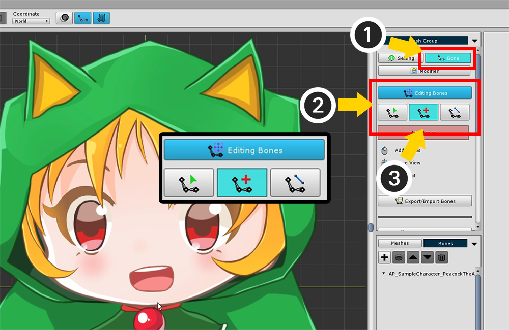
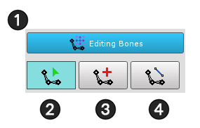
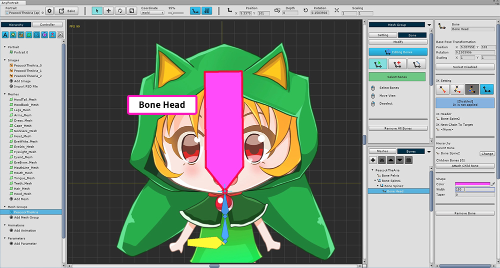
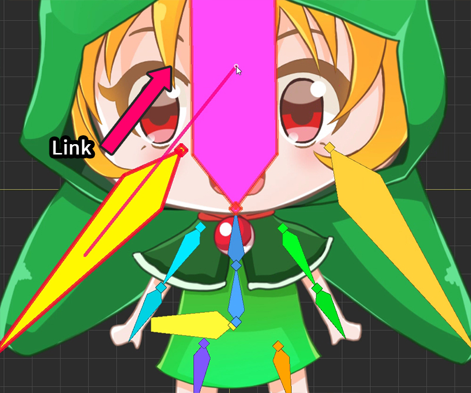
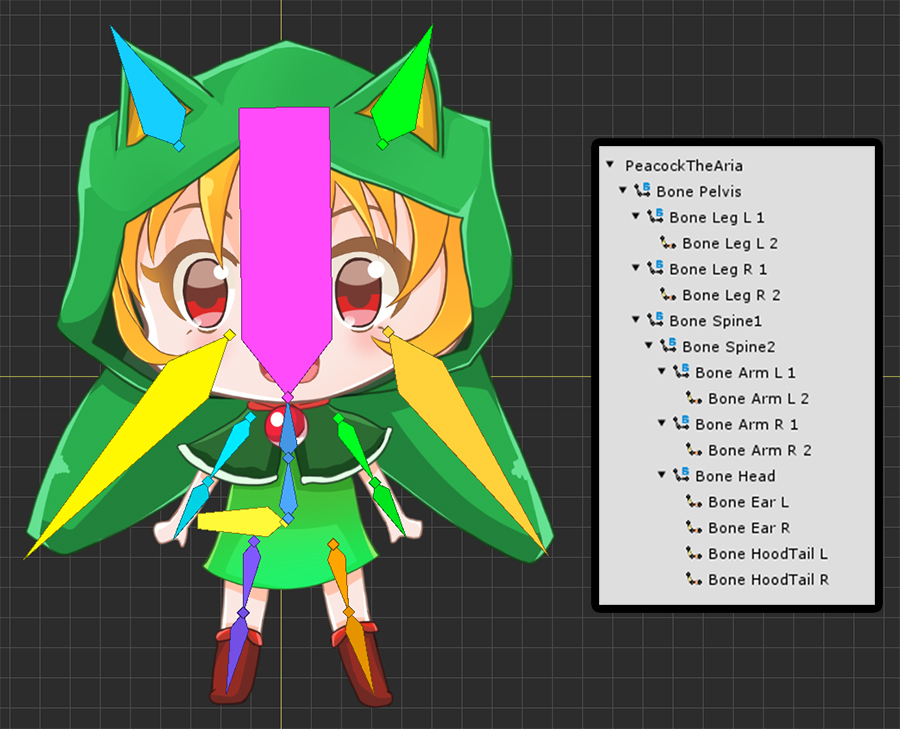
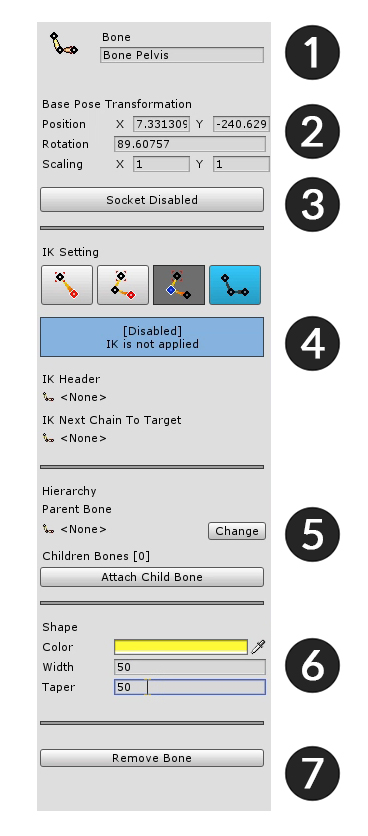
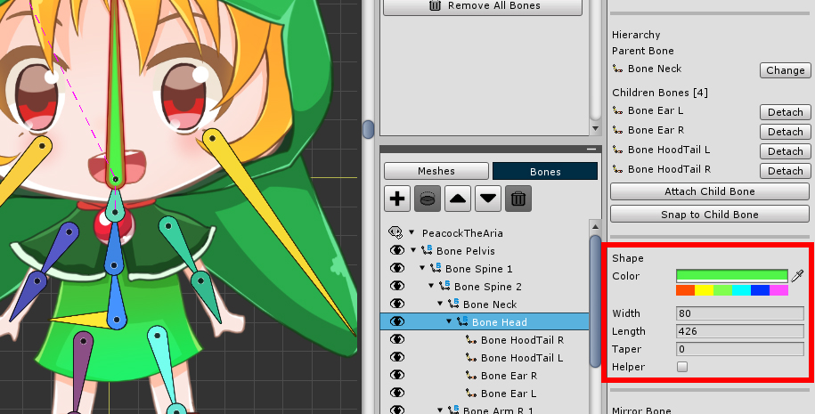

AnyPortrait > 시작하기 > 2.4. 본 추가하기
2.4. 본 추가하기
1.0.0
본(Bone) 애니메이션을 위해서 본을 추가하는 방법을 다룹니다.
AnyPortrait에서는 본 IK(Inverse Kinematics)를 지원하며, 본 소켓(Socket)을 지원합니다.
자세한 것은 관련 페이지(IK 설명, 소켓 설명)에서 확인할 수 있습니다.
이 페이지에서는 기초적인 본 추가 과정과 다음 튜토리얼을 위한 설정 상태를 알려줍니다.

(1) 본(Bone) 메뉴를 선택합니다.
본 작업을 위해서 (2) Start Editing Bones 버튼을 눌러서 본 편집 모드를 활성화합니다.
(3) 3개의 본 편집 툴 중에서 본 추가 툴을 선택합니다.

본 편집 모드 관련 화면입니다.
1. 본 편집 활성/비활성 버튼 : 본 편집 모드를 켜거나 끕니다. 켜진 상태에서만 수정할 수 있습니다.
2. 본 선택 툴 : 본을 선택할 수 있습니다.
3. 본 추가 툴 : 본을 추가할 수 있습니다. 선택된 본이 있으면 자식 본(Child Bone)으로 자동으로 등록합니다. 마우스 우클릭 으로 선택을 취소하고, 한번 더 우클릭 을 하면 본 선택 툴로 전환됩니다.
4. 본 연결 툴 : 두개의 본을 연결하여 부모-자식 관계(Parent-Child) 로 연결합니다. 두번째 선택된 본이 부모 본(Parent Bone)이 됩니다. 마우스 우클릭 으로 선택을 취소하고, 한번 더 우클릭 을 하면 본 선택 툴로 전환됩니다.
본을 추가하는 방법을 익히고 다음 작업을 진행하겠습니다.

본이 선택되지 않은 상태에서는 (1) 처음 클릭한 위치를 시작점으로, (2) 두번째 클릭한 위치를 끝점으로 하여 본을 생성합니다.

본이 선택된 상태에서는 (1) 선택한 본의 끝점을 시작점으로, (2) 이어서 클릭한 위치를 끝점으로 하여 본을 생성합니다.
이때, 새로 생성된 본의 이름과 색상은 이전에 선택된 본과 유사하게 설정이 되며, 모양은 동일하게 됩니다.

몸의 중심이 되는 골반에 본을 추가합니다. 방향은 상관 없으나 나중에 선택하기 쉽게 가로로 만들었습니다.

(1) 본 선택 툴로 바꾸어 방금 만든 본을 선택합니다.
(2) 선택한 본의 이름을 "Bone Pelvis"로 설정합니다.
(3) 본의 색상과 모양을 수정합니다.
중요한 본의 경우 크기가 크면 선택하기 쉬우므로 작업하기 편하게 설정하는 것이 좋습니다.

이제 몸 관절을 만듭니다.
먼저 새로운 본을 생성하여 "Bone Spine1"으로 이름을 설정합니다.

"Bone Spine1" 본을 선택한 상태에서 바로 두번째 본을 생성을 합니다.
두번째 본의 이름은 자동으로 "Bone Spine2"으로 이름이 지정되며, 크기나 색상이 이전 본과 유사하게 설정됩니다.

머리 본("Bone Head")을 추가합니다.

캐릭터 후드티의 귀 장식에도 본을 추가합니다.

위와 같이 본을 설정합니다.
어떤 애니메이션을 만들지, 어떤 이미지를 대상으로 하는지에 따라 다양하게 본을 설정할 수 있습니다.
이제 다음 작업은 완성된 본들을 서로 연결하는 것입니다.
본을 제대로 연결하면 실제 사람처럼 자연스럽게 움직일 수 있습니다.
골반(Pelvis)을 부모 본(Root Parent Bone)으로 하고, 머리, 손, 발을 끝으로 연결하는 것이 일반적입니다.

본을 연결하기 위하여 (1) 본 연결 툴을 선택합니다.
(2) 몸의 시작 본("Bone Spine1")을 선택한 뒤, (3) 골반("Bone Pelvis")을 선택합니다.
이렇게 하면 골반을 부모로, 몸을 자식으로 연결됩니다.
다음 선택을 위해 마우스 우클릭 을 하여 선택을 해제합니다.

같은 방식으로 다리를 선택한 뒤, 골반으로 연결합니다.

머리와 양 팔은 몸의 가장 위쪽 본("Bone Spine2")에 연결합니다.

머리에 있는 각종 장식(후드 귀와 후드 꼬리) 본들을 머리("Bone Head")로 연결합니다.

완성된 본들과 계층 구조입니다.
꼭 이 방식과 같을 필요는 없으나 사람의 뼈의 연결 관계를 생각하시어 만들면 되겠습니다.
본이 보이지 않는다면?

화면 상단의 본을 보이게 하거나 숨기는 버튼이 있습니다. 이 버튼은 3가지 상태가 있습니다.
1. 버튼이 꺼진 상태에서는 본이 보이지 않습니다.
2. 버튼이 켜진 상태에서는 본이 색이 채워진 형태로 나타납니다.
3. 버튼이 켜져있으나 속이 빈 아이콘인 상태에서는 본이 선으로만 나타납니다.
참고 : 이 페이지에서는 본 설정을 자세히 다루지 않고 개략적으로 다루었습니다.
본 설정 화면의 구조는 다음과 같습니다.
사용법은 관련 페이지를 참조하세요.

1. Name : 본의 이름을 설정합니다.
2. Base Pose Transformation : 본의 위치, 회전, 크기값입니다.
3. Socket : Bake 후에 본을 참조하기 위해선 소켓을 켜면 됩니다.
4. IK Setting : 본의 IK 기능을 설정하는 구역입니다.
5. Hierarchy : 부모 본, 자식 본을 여기서 직접 선택할 수 있습니다.
6. Shape : 색상과 모양을 설정합니다. Taper가 클수록 끝이 뾰족하게 됩니다.
7. Remove Bone : 본을 삭제합니다. 다이얼로그 선택에 따라 모든 자식 본들을 삭제할 수도 있습니다.
색상 프리셋과 "바늘 모양" 본에 관한 변경 사항
1.2.3

v1.2.3에 추가된 기능인 색상 프리셋을 이용하면 본의 색상을 빠르게 변경할 수 있습니다.
6개의 색상 버튼을 클릭하면, 해당 색상과 비슷하게 변경됩니다.
버튼을 누를 때마다 다른 색상이 지정됩니다.
프리셋으로부터의 색상의 범위가 적당히 넓기 때문에, 같은 계열의 본들의 색상을 비슷하게 만드는 것도 용이합니다.
v1.2.3부터 "화살촉 모양"과 "바늘 모양"의 본으로 설정을 변경할 수 있습니다. (관련 페이지)
"바늘 모양"을 선택한 경우, Width와 Taper 설정은 적용되지 않습니다.